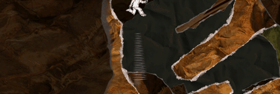

7 |
Resting In Pieces |
 |

As you are made out of paper you can’t die, but you will rip apart if you aren't careful. You rip apart if you hit the ground or other objects too fast, or if you get squashed between two objects. Watch out if you are in a very tight space and rotate, because you can get squished there too. Don’t worry too much about ripping apart, because there are no lives or any other penalties for this. You will always be stuck back together, an unlimited number of times. One thing you will notice is that you can survive a long and fast fall if you land on a downward slope, but will rip apart if you land on a horizontal floor. Use this knowledge wisely, and try to rotate the world so you land on a downward slope! To know how fast you are falling, there is a speed bar (see picture) which is shown as long as you rotate the world. The longer the speed bar, the faster you are falling, and the more likely you are to rip apart when landing. In addition to the speed, the bar also shows you which direction you will fall when you stop rotating the world. |
 |
 |
 |